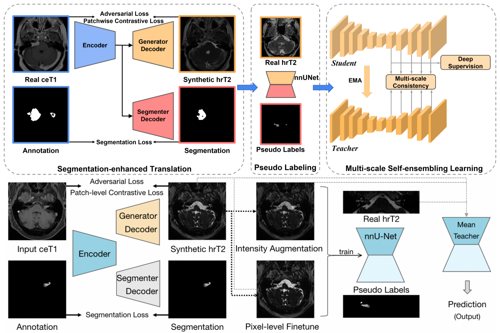
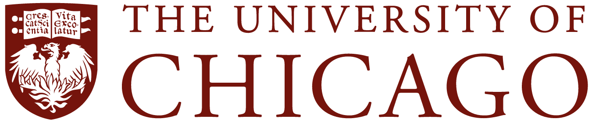

Ruikai Lin
Postgraduate
Dept of Biomedical Informatics
E-mail: rklin [at] aliyun.com 🔗 |
|
Short Bio & Research Interests [Research Conclusions]
I'm a highly motivated student at the Department of Biomedical Informatics, National University of Singapore (NUS), advised by Dr. Andrew Makmur and Prof. Kee Yuan Ngiam, while my research is mostly being conducted at the National University Health System (NUHS).
I'm broadly interested in the interdisciplinary field of AI and healthcare to advance non-invasive disease diagnosis via deep learning and computer vision.
Currently, I'm working on label-efficient medical image analysis at Institute for Infocomm Research, A*STAR, including unsupervised domain adaptation and cross-modality learning, working with Dr. Xulei Yang.
Prior to that, I worked with Prof. Zhaowen Qiu at Heilongjiang Medical Imaging 3D Visualization and Printing Engineering Center, CAS Tuomeng, mainly focusing on medical image segmentation applications (horizontal research), clinical data mining and some retrospective research, and received B.Eng in Computer Science and Technology from Northeast Forestry University in 2022.
After that, I joined Lenovo Research briefly and participated in AIGC-related research.
I was born on Amoy Island in Fujian Province, China in 1999. My name written in Bân-lâm-gú Peh-ōe-jī (Hokkien POJ) is Lîm Sūi-Khôi.
Journals

|
Six-month Follow-up after Recovery of COVID-19 Delta Variant Survivors via CT-based Deep Learning. Jianliang Huang †, Ruikai Lin †, Na Bai †, Zhongrui Su, Mingxin Zhu, Han Li, Conghai Chai, Mingkai Xia, Ziwei Shu, Zhaowen Qiu*, Mingsheng Lei*. Frontiers in Medicine (JCR Q2, IF = 5.058) , 2023. 👉🼠Paper |

|
Deep learning for predicting the risk of immune checkpoint inhibitor-related pneumonitis in lung cancer. Meiling Cheng †, Ruikai Lin †, Na Bai †, Yu Zhang, Haitao Wang, Mingyuan Guo, Xiaoman Duan, Jian Zheng*, Zhaowen Qiu*, Yanbin Zhao*. Clinical Radiology (JCR Q2, IF = 3.389) , 2023. 👉🼠Paper | Slide |

|
Exploring New Characteristics: Using Deep Learning and 3D Reconstruction to Compare the Original COVID-19 and Its Delta Variant Based on Chest CT. Na Bai †, Ruikai Lin †, Zhiwei Wang, Shengyan Cai, Jianliang Huang, Zhongrui Su, Yuanzhen Yao, Fang Wen, Han Li, Yuxin Huang, Yi Zhao, Tao Xia, Mingsheng Lei*, Weizhen Yang*, Zhaowen Qiu*. Frontiers in Molecular Biosciences (JCR Q1, IF = 6.113) , 2022. 👉🼠Paper | Slide | Software Copyright Press & Media: CCTV(央视) | Sina(新浪) | NETEASE(网易) | The Paper(澎湃) | HLJ Daily | HLJ News |
Conferences

|
Project Co-Art: Improving Children's Imagination Through AI-Based Human-Computer Co-Creation.
(Oral presentation in Haikou, China) Zuyu Shen, Yinzhu Piao, Cong Tan, Ruikai Lin*, Xu Zhao, Xi Wan. (Lenovo Research) IEEE Int'l Conf. on Ubiquitous Intelligence and Computing (UIC) , 2022. 👉🼠Paper | Presentation | Video Show | Slide | Project Page | Lightweight Demo (Pads only) | Investigation Press & Media: iF Design Award '22 | Lenovo Open Day '22 (video 1'5" to 1'9") | Lenovo |

|
Accurate recognition method of plant leaves based on multi-feature fusion. Ruikai Lin, Junwei Ma, Huiling Yu*, Yizhuo Zhang*. Int'l Conf. on Image Processing and Intelligent Control (IPIC) , 2021. 👉🼠Paper |
arXiv Preprint & Tech Report
|  | MS-MT++: Enhanced Multi-Scale Mean Teacher for Cross-Modality Vestibular Schwannoma and Cochlea Segmentation. Ziyuan Zhao, Ruikai Lin, Kaixin Xu, Xulei Yang*, Cuntai Guan*. MICCAI crossMoDA 2023 challenge, Tech Report Preprint. 👉🼠Paper |
Patents

|
Human-machine verification method based on situational awareness and image generation. (Lenovo Highly Confidential) Zuyu Shen, Ruikai Lin, Xi Wan. Chinese Invention Patent CN9202214743-CN, not yet public, 2022. |

|
An automatic CCD inspection equipment for 5G communication products. Ruikai Lin, Liyuan Wang, Meiling Liu. Chinese Utility Model Patent CN213715073U, 2021-07-16 , 2021. 👉🼠[Certificate] [Description] |
| |
| |
| |
| |
| |
| |
Professional Experience


Education
| National University of Singapore Master student in Biomedical Informatics, Aug. 2022 - present |
|
| The University of Chicago Visiting student, AI+Science Summer School at the Data Science Institute (DSI), Jul. 2023 |
 |
| Northeast Forestry University B.Eng. in Computer Science and Technology, Sep. 2018 - Jul. 2022 |
|
Breadcrumbs
- [05/2023] Internship at I2R, A*STAR, under the project Label-efficient Meta-learning for Cross-domain Biomedical Image Analysis.
- [04/2023] My capstone project (master) Slide and Demo were completed during the NUHS internship. I am fortunate to be advised by Dr. Andrew Makmur.
- [03/2023] I decided to start looking for RA/Interns opportunities and work hard to be successful in the 24 fall PhD application. Welcome like-minded people to grow together ✊🏼
- [01/2023] A calendar made with pictures generated by Co-Art is now on sale at CITIC Bookstore (Beta version, in Beijing)!
- [10/2022] Our work Co-Art was selected for Chinese National Science Week 2022 (Beijing) and Lenovo Innovation Open Day 2022. The project paper was accepted by IEEE UIC'22.
- [10/2021] Our start-up project Pneumonia Auxiliary Diagnosis System won the second prize in the "Maker in China" competition (Heilongjiang Province), winning CNY 30,000! 💸💸💸
Miscellaneous
[Download my CV in Model Aeronautics]
Some projects will be hidden when a paper is under double-blind peer review.